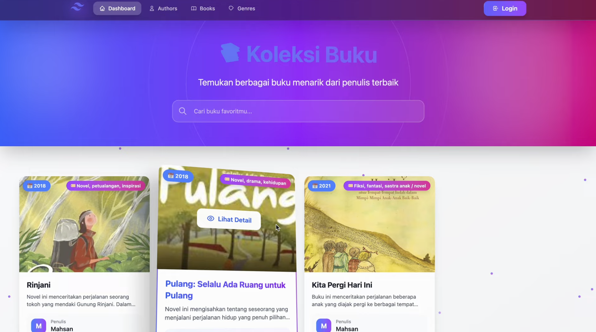

A digital library platform developed as an academic project to explore full-stack web development with Laravel. The application allows users to browse book collections, manage borrowing activities, and access library resources through a centralized and user-friendly system.
Many libraries still rely on manual processes to manage book inventories and borrowing records, making information harder to organize and maintain. This project was created to simulate how a digital library could streamline these activities in a more efficient way.
I developed a web-based library management system featuring role-based access control, book catalog management, and borrowing workflows. The platform provides a structured experience for both administrators and users while keeping library operations organized and accessible.
Watch demo — see the features in action
One of the biggest challenges in this project was managing the relationships between users, books, and borrowing records while keeping the system organized and maintainable. Through building the authentication, catalog, and borrowing modules, I gained practical experience with Laravel, database design, and structuring full-stack applications with multiple interconnected features.